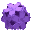

description
short description
An experimental physically-based renderer simulating global illumination, with progressive refinement, frame-coherent/noise-avoiding sampling, and generalised BRDFs. Complete open-source available for download under GPL license, totalling 30000 lines of well organised C++.
|
|
longer description
Perceptuum is an open-source standalone general purpose physically-based renderer simulating global illumination with monte-carlo ray tracing.
It is a Win32 application, with a minimal windowing interface. The scene and options are defined by XML files, and the image output is as tonemapped PNG (plain or sRGB) files, or ward-realpixels PNG files.
The code is 30000 lines of C++, divided into java-style packages, divided into classes, each in two files (h,cpp). It is intended to be ISO C++, but it has been developed with only one compiler, and not tested with anything else.
Illumination is a combination of direct lighting, and directly visualised photon mapping. Lightsources are selected with importance sampling by wattage. Light interaction is by semi-generalised BRDF, currently using the ward model and normalised phong. Light representation is high dynamic range CIE XYZ.
The rendering process is by progressive refinement, gradually accumulating frames. Each frame covers all sampling dimensions based on the frame number so it is persistable and deterministic, and the frame coherence eliminates pixel noise in exchange for much less prominent strobe artifacts. The time dimension is included, enabling motion blur. Most of the stochastic generators are quasi-random sequences, to reduce variance.
Models are triangle meshs, in a hierarchical instancing tree, each base object mesh being a single non-self-intersecting closed surface. Texturing is by images, with each object having a material pointer and its triangles having coords at the corners. The materials map a simple generalized range of qualitative reflection model parameters.
Current development status is that basic overall implementation is done. Important features yet to do include acceleration and tuning, sky illumination, and standard model file format translation. Other features to do include translucent volumes, texturing enhancements, wavelength sampling and polarisation enhancements. Full automation is a somewhat distant goal.
more documentation
images
downloads
|  | |
|
|
zipped source code (412k) |
|
|
latest source code changes (better Octree mainly) (167k) |
|
|
zipped executable (337k) |
|
|
readme text file(25k) |
|
|
license text file (18k) |
links
| www.pointzero.nl/renderers | a list of renderers of all kinds |
| toxicengine.sourceforge.net | an open-source renderer, C++, Win32 or others |
| aqsis.sourceforge.net | an open-source renderer, renderman, C++, Win32, Linux, Mac |
| rise.sourceforge.net | an open-source renderer, C++, Win32 and others |
| sunflow.sourceforge.net | an open-source renderer, Java |
| www.winosi.onlinehome.de | an open-source renderer, C++, Win32 |
| radsite.lbl.gov/radiance/papers/sg94.1 | description of the radiance renderer |
| graphics.ucsd.edu/~henrik/ | the photon mapping pioneer |
| www.graphics.cornell.edu/online/box | the original cornell box |
| www.cs.utah.edu/~bes/papers/scenes | renderer test scenes |
| www.raytracingnews.com | raytracing notes and ideas |
| www.graphicspapers.com | find that graphics research paper |